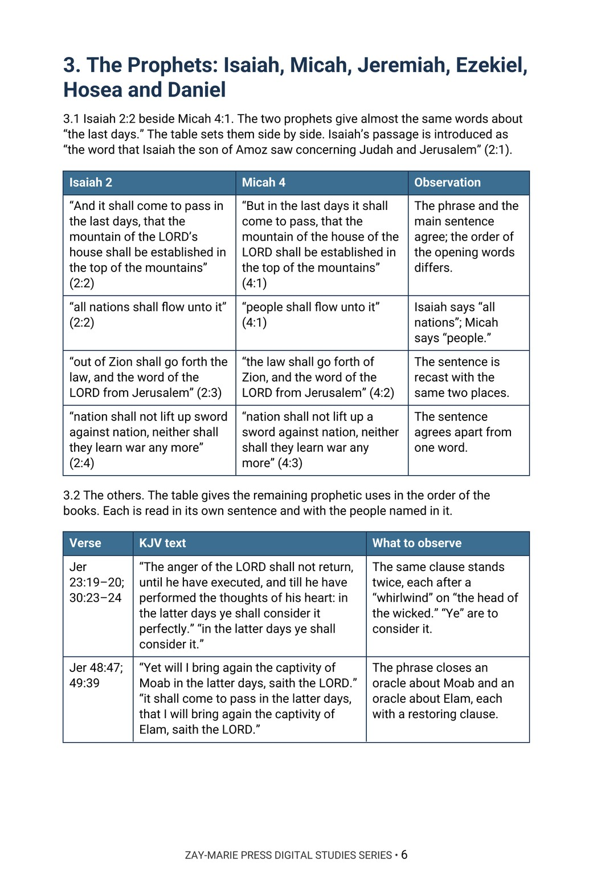

The Last Days
Where Scripture Uses the Phrase, of Whom Each Passage Speaks, and What It Leaves Unsaid
Where does the King James Version say “the last days” or “the latter days,” who is speaking in each place, and what does the passage say follows?
“The last days” is a phrase heard in sermons, charts and headlines, and it is usually taken to name one period. Yet the King James Version prints it, and its near wordings, in the mouths of Jacob, Balaam, Moses, the prophets, Peter, Paul and the writers of the letters. This study reads each place in its own chapter.
It asks four things of every passage: who speaks, who is addressed, what the passage says follows the phrase, and what it leaves unsaid. It then sets the passages side by side and tests three common readings against the words.
Ask Who Speaks, Who Hears and What Follows
You will sort the wordings the King James Version prints, read Genesis 49:1, Numbers 24:14 and Deuteronomy 4:30 and 31:29, compare Isaiah 2:2 with Micah 4:1, read the time words of Jeremiah, Ezekiel, Hosea and Daniel, read Acts 2:14–21 beside Joel, follow the six letters that use the phrase and the letters to Timothy, and then set the passages side by side.
Readers who already own Study 7 (The Day of the Lord), Study 20 (Understanding Acts 2:38), Study 74 (The Man of Sin) or Study 80 (The Lamb Foreordained) will recognize adjoining ground. Study 7 reads the passages on that day across the Scriptures; Study 20 sets Joel 2:28–32 beside Acts 2:16–21 for the sake of Acts 2:38, while this study reports only the opening phrase of Acts 2:17; Study 74 reports the final-ruler passages, and this study reads 1 John 2:18 only for the words “the last time”; Study 80 reads 1 Peter 1:20 among the passages on the foundation of the world, and this study reads it only for “these last times.” The question this study alone answers: where does the King James Version print “the last days,” “the latter days” and their near wordings, to whom is each spoken, what does each passage say follows, and what does each leave unsaid?
Related Reading
Digital Studies
Study 7 — The Day of the Lord Read the passages on that day across the Scriptures; Study 87 reads only the places that print “the last days” and “the latter days” and does not follow the day.
Study 20 — Understanding Acts 2:38 Set Joel 2:28–32 beside Acts 2:16–21 for the sake of Acts 2:38; Study 87 reports only the opening phrase of Acts 2:17.
Study 74 — The Man of Sin Report the final-ruler passages; Study 87 reads 1 John 2:18 only for the words “the last time.”
Commentary Series
Acts Commentary Series, Volume 2 — The Spirit in Acts Argues that the four scenes in which Acts reports the Spirit’s coming follow no single order; Study 87 reports only the opening phrase of Acts 2:17 and builds no argument on the scenes.
Prophecy & Mystery Commentary Series, Volume 3 — The Kingdom Program Argues that the kingdom is promised to Israel and still to come; Study 87 reads Isaiah 2:2 and Micah 4:1 only for the phrase and does not argue the kingdom.
Follow the Phrase Through the Passages
The Wordings in the King James Version
Locate each place where the King James Version prints “the last days,” “the latter days” or a near wording, and sort them by the exact words used.
Four Questions for Each Passage
Read each passage in its own chapter and mark who speaks, who is addressed and what the passage says follows the phrase.
Two Pairs Compared
Compare Isaiah 2:2 with Micah 4:1, and Joel’s opening words with Peter’s, and record which words agree and which differ.
The Verbs of the New Testament
Follow the tense of the verbs in the New Testament passages (“hath spoken,” “was manifest,” “is,” “shall come”) without reconciling them beyond the text.
The Readers Each Letter Names
Trace how the letter writers introduce the phrase, and note which readers each letter names for itself.
Three Readings Tested
Test three common readings of the phrase against its own wording, sorting what the text states from what readers add.
Read the Word in Its Context
Genesis 49:1; Numbers 24:14
Jacob tells his sons “that which shall befall you in the last days”; Balaam says what Israel “shall do to thy people in the latter days.”
Deuteronomy 4:30; 31:29
Moses gives “the latter days” in two different sentences.
Isaiah 2:2; Micah 4:1
Two prophets, near-identical words, and a mountain “in the last days.”
Daniel 2:28; 10:14
“What shall be in the latter days,” spoken to a king and to Daniel.
Daniel 12:4–13
“The time of the end” and “the end of the days.”
Acts 2:14–21
“And it shall come to pass in the last days, saith God,” in Peter’s words.
Hebrews 1:1–2
God “hath in these last days spoken unto us by his Son.”
2 Timothy 3:1; 2 Peter 3:3
“In the last days perilous times shall come,” and scoffers “in the last days.”
A Rule for Reading This Subject
Each passage is read in its own place, with its speaker, its audience and the sentence that carries the phrase. A link between passages is made only where a passage makes it.
Where the text is silent, the study records the silence and stops.
Preview the Study Before You Purchase
Click any page to enlarge it for reading.



Isaiah 2:2 Beside Micah 4:1
See how the study sets two passages side by side in a table.
A Focused Study of Every Place the Phrase Is Printed
16-Page Digital PDF
Approved cover and 15-page numbered interior.
8 Teaching Sections
A text-driven walk from the wordings in the King James Version to the passages side by side.
Callout Boxes
Five callout boxes marking the study’s key working rules.
KJV Tables
Tables setting out the key passages for observation.
Scripture-Tracing Exercise
Guided traces through the passages the study relies on.
Guided Further Study
Passage groups for deeper reading.
Review Questions
Questions testing the study’s markers and method.
Final Synthesis Exercise
A written synthesis drawing the whole study together.
The Last Days
16-page digital PDF · For personal use